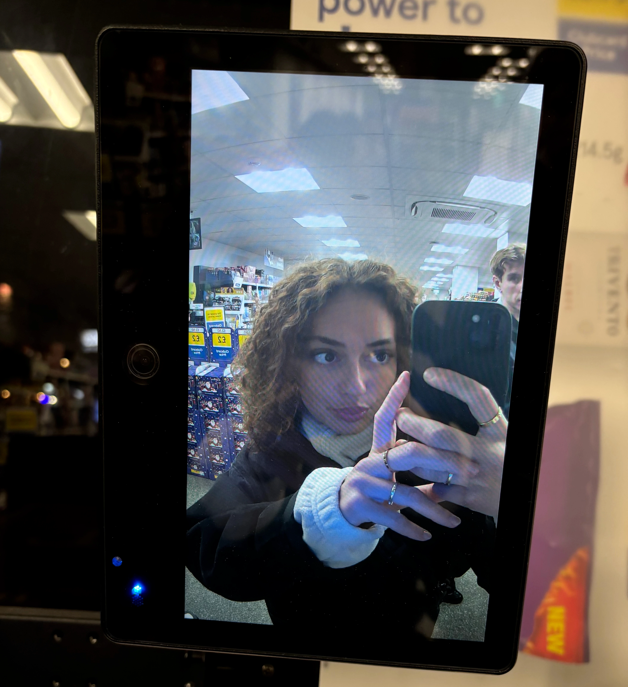

OM MIG
Jeg hedder Alma Castillo, er 21 år og opvokset på Frederiksberg. Efter jeg blev student fra
Gefion Gymnasium, holdt jeg
to sabbatår, hvor jeg arbejdede og rejste - og brugte tiden på at undersøge uddannelser.
I sommeren 2024 startede jeg på It-arkitektur på KEA, fordi jeg var nysgerrig på kodning. Jeg
fandt hurtigt ud af, at
det var noget, jeg virkelig kunne lide. Senere blev jeg nysgerrig på Multimediedesign, hvor man
kombinerer kodning med
kreativitet og design - og det passede bedre til mig. Jeg skiftede derfor linje ved vinterstart,
og det har vist sig at
være det helt rigtige valg.
På studiet har jeg arbejdet med opsætning og styling af websites i HTML og CSS,
designprincipper, grundlæggende
JavaScript, grafiktegning i Illustrator samt wireframing, prototyping og design i Figma.